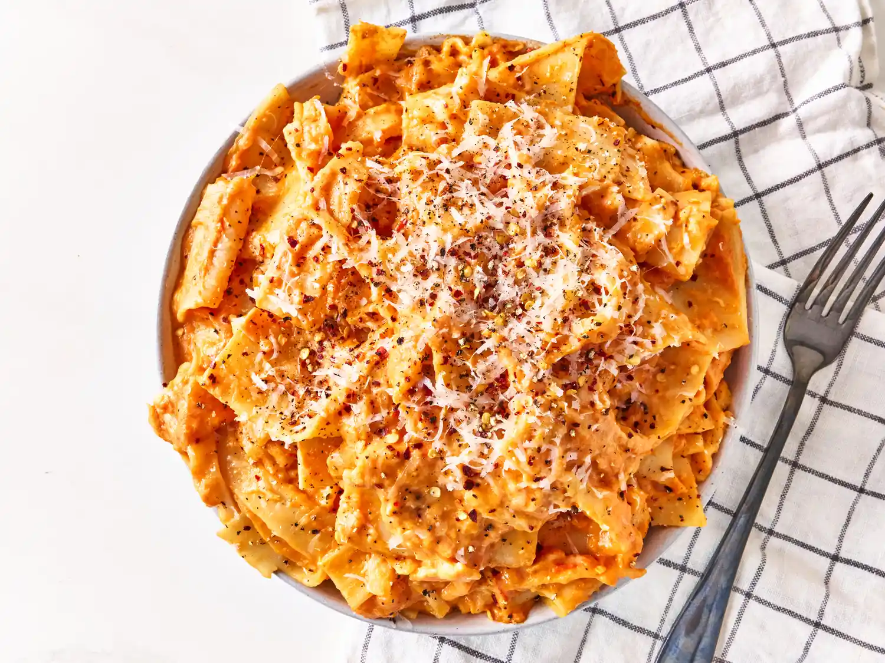

Home
lasgna
this is a lasagna recipe

Directions
Bring a large pot of lightly salted water to a boil. Cook lasanga noodles in the boiling water, stirring occasionally, until tender yet firm to the bite, 10 to 12 minutes.
Strain noodles and return to the pot. Add pasta sauce and cook on medium heat until sauce is heated through, about 5 minutes.
Add cheese and stir until cheese is melted. Serve immediately.